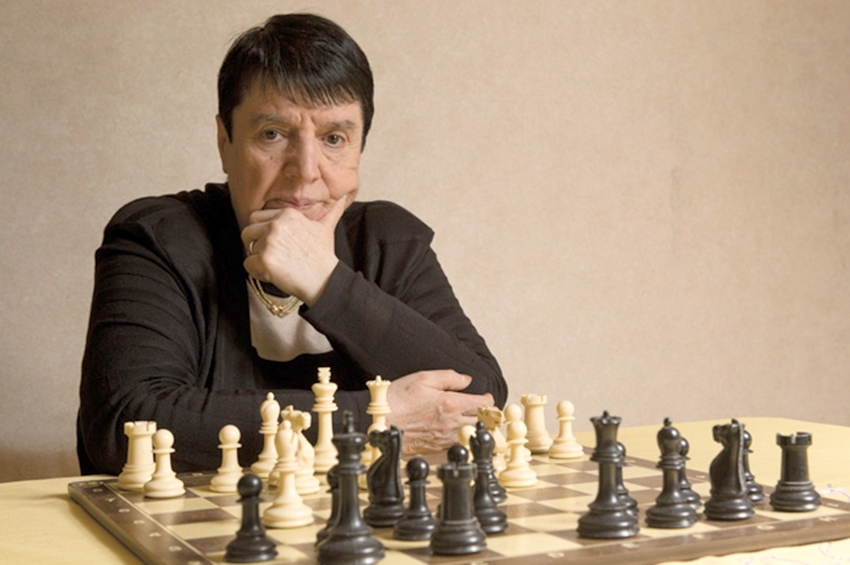

რას უნდა მოელოდეთ ეროვნული სასახლისგან ?
- 160-ზე მეტი წრე და კლუბი.
- 81 წლიანი გამოცდილება რომელიც ახალგაზრდებისთვის სწორი გადაწყვეტილების და წარმატებული მომავლის გარანტიაა.
- ახალგაზრდებს საშუალება აქვთ თავად აირჩიონ მათთვის საინტერესო სფერო.
- სასახლე ყოველთვის მზად არის ახალგაზრდების განვითარებისაკენ მიმართული თანამშრომლობისთვის.
რა არის ჩვენი მიზანი?
ჩვენი მიზანია მოვიზიდოთ ახალგაზრდები, რომ ისწავლონ მათთვის საინტერესო სფერო, მათ შორის საკმაოდ პოპულარულია ჭადრაკის კლუბი.
ვინ შთაგონებას გვაძლევს ?
საქართველოში უამრავი სხვადასხვა ასაკის ცნობილი მოჭადრაკეა. შემოგთავაზებთ ნონა გაფრინდაშვილის მოკლე ბიოგრაფიას:
ნონა გაფრინდაშვილი (დ. 3 მაისი, 1941, ზუგდიდი, საქართველოს სსრ) — ქართველი და საბჭოთა მოჭადრაკე, საერთაშორისო დიდოსტატი ქალთა შორის (1977) და პირველი ქალი, ვისაც საერთაშორისო დიდოსტატის წოდება მიენიჭა ვაჟთა შორის (1978). მსოფლიოს ხუთგზის ჩემპიონი (1962–1978). 11 გუნდური და 9 პირადი ოლიმპიური ოქროს მფლობელი. საბჭოთა კავშირის ხუთგზის ჩემპიონი (1964, 1973, 1981, 1983, 1985), ევროპის ქვეყნების ჩემპიონთა თასის ორგზის მფლობელი (1969, 1972). ჭადრაკის „ოსკარის“ პირველი მფლობელი (1982). საქართველოს XX საუკუნის საუკეთესო სპორტსმენი ქალი (ოქროს პრიზი). საქართველოს ორგზის წლის საუკეთესო სპორტსმენი (1969, 1975). საბჭოთა კავშირის სპორტის დამსახურებული ოსტატი (1964). თავისი თაობის მსოფლიოს უძლიერესი მოჭადრაკე ქალი. ფიდეს 68-ე კონგრესის გადაწყვეტილებით (1997) დაწესდა ნონა გაფრინდაშვილის სახელობის თასი, რომელიც გადაეცემა კაცთა და ქალთა ოლიმპიადების ჯამში საუკეთესო ქვეყანას. საქართველოს ეროვნული ოლიმპიური კომიტეტის პირველი პრეზიდენტი (1989–1996) და საპატიო პრეზიდენტი 1996 წლიდან. საქართველოს ჭადრაკის ფედერაციის პრეზიდენტი (2000–2002). ფიდეს ქალთა კომისიის თავმჯდომარე (1980–1986). ვახტანგ გორგასლის I ხარისხის ორდენის კავალერი (2001). ოლიმპიური მოძრაობის განვითარებაში შეტანილი თვალსაჩინო წვლილისთვის 1996 წელს მიენიჭა საერთაშორისო სპორტული ორგანიზაციების სამი უმაღლესი ჯილდო: საერთაშორისო ოლიმპიური კომიტეტის ორდენი, ეროვნული ოლიმპიური კომიტეტების მსოფლიო ასოციაციის საპატიო ორდენი და ევროპის ოლიმპიური კომიტეტის ორდენი.